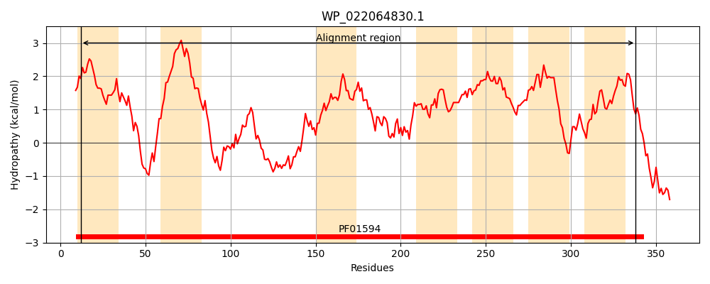
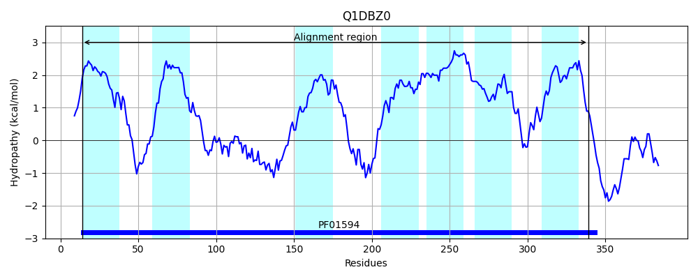
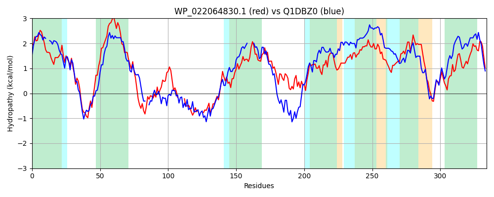

Hit Accession: Q1DBZ0
Hit TCID: 2.A.86.2.2
Hit Description: gnl|BL_ORD_ID|12947 gnl|TC-DB|Q1DBZ0|2.A.86.2.2 Putative membrane protein OS=Myxococcus xanthus (strain DK 1622) GN=MXAN_1581 PE=4 SV=1
Mach Len: 334
e:0.000000
Query TMS Count : 7
Hit TMS Count: 7
TMS-Overlap Score: 7.400000
Predicted Substrates:CHEBI:40646;autoinducer-2
BLAST Alignment:
Score: 334 , Bit scores: 133 bits, E-value: 1.9e-35, Alignment length: 334, Percentage identity: 30
Query: 12 ILIVFIVTLAFFDVLSPYYSAILWAAILAVIFNPVKNKIRTRLGERNGLAALLTIVIICLIVFTPLAIILSSLAYELNVVYSKLQHNDTQFPTVVASLFAHLPGWARG----FLAEHNLDSAQ---QIQQQLSDVALKSGQYLAGSAFLIGKGTFGFTVSFGIMLYLLFFLLKDGPYLVLLTLESLPLSSYVKQHLFAKFAAVARATVKGTVAVALAQGALGGFAFWVAGLDGSILWGALMAFLSLIPAVGSAIIWVPAAIYLFATGQLWQGAFIVGFFVIVIGLVDNILRPLLVGKDTKMPDYLILIATLGGMEIYGINGFVIGPLIAALFIA 338
++I+ I+ LA V+ P+ A AA+LA F + +++ +L N LAA + + + L + PL + + + E++ + +DT V L +P RG L L+ AQ +QQQ+S + + + G+ G F + ML LFFLL +G LV PL + + +F +V+ A + +VA A Q A F +A + ++ + + F++LIPAVG+AI+ + AA +F +G W F+ + +V+GLVDNI++PLL + ++ A LGG+ +G G ++GPLI A F+A
Sbjct: 14 LIILSIILLAL--VVRPFAKAFFLAAVLAGTFYGLYSRLSRKLRGHNNLAAGVIVSGVILALLLPLGGLTAFIVTEVSDGVKFV--SDTVQREGVEGLIGKIPSPVRGPVERLLERIPLEQAQLDETLQQQVSTQGGTAARAVTGAVAATGSIAFQTVM----MLIALFFLLTEGARLVSWVESVSPLRRGQTREILREFRSVSVAVLVSSVATAGVQAAAALVGFLIARVPAALFFAGVAFFMALIPAVGAAIVVLVAAALMFFSGHPWAALFLAIWGTVVVGLVDNIVKPLLARRGMHQHAAIVFFALLGGLAAFGTVGLLLGPLIVAFFLA 339 | Protein Hydropathy Plots: |
|---|
|  |  |
Pairwise Alignment-Hydropathy Plot:
|
|---|
|  |